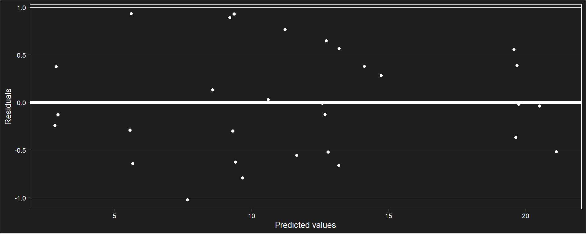
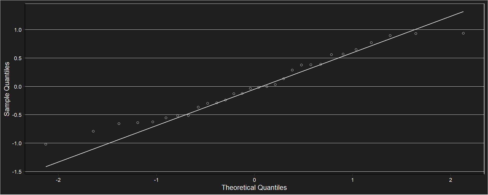
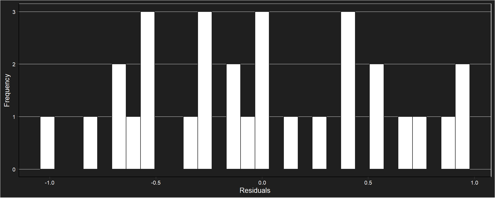
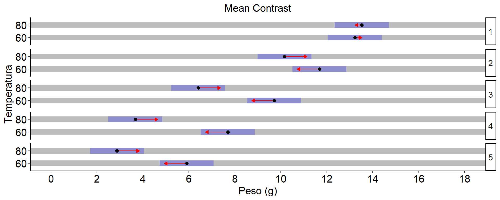
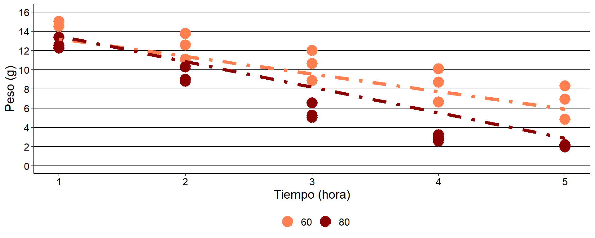

Pruebas de secado
Tabla descriptiva
## # A tibble: 14 × 5
## # Groups: Temperatura [2]
## Temperatura Hora n Mean sd
## <fct> <fct> <int> <dbl> <dbl>
## 1 60 0 3 20.4 0.246
## 2 60 1 3 14.0 1.31
## 3 60 2 3 12.5 1.34
## 4 60 3 3 10.5 1.56
## 5 60 4 3 8.48 1.74
## 6 60 5 3 6.69 1.75
## 7 60 6 3 4.97 1.59
## 8 60 7 3 2.52 0.482
## 9 80 0 3 19.7 0.401
## 10 80 1 3 12.7 0.572
## 11 80 2 3 9.37 0.804
## 12 80 3 3 5.61 0.810
## 13 80 4 3 2.88 0.336
## 14 80 5 3 2.08 0.124Gráfico de medias con desvío estándar

Gráfico de líneas de tendencia medias y valores puntuales

Correlación de cada unidad observacional en el tiempo
Matriz de covarianzas
## 0 1 2 3 4 5
## 0 0.24 0.46 0.88 1.28 1.40 1.15
## 1 0.46 1.32 2.06 2.86 3.12 2.67
## 2 0.88 2.06 3.88 5.66 6.26 5.23
## 3 1.28 2.86 5.66 8.41 9.40 7.84
## 4 1.40 3.12 6.26 9.40 10.69 8.98
## 5 1.15 2.67 5.23 7.84 8.98 7.61Modelo marginal. Estructura autoregresiva de orden 1
## gls(model = (Peso) ~ Hora * Temperatura + basal, data = datospeso2w,
## correlation = corAR1(form = ~1 | Repeticion))Comprobación de supuestos 
##
## Shapiro-Wilk normality test
##
## data: e
## W = 0.9558226, p-value = 0.241377Coeficientes del modelo
## (Intercept) Hora2 Hora3 Hora4 Hora5
## -31.996552210 -1.539666667 -3.514333333 -5.533000000 -7.323000000
## Temperatura80 basal Hora2:Temperatura80 Hora3:Temperatura80 Hora4:Temperatura80
## 0.298694977 2.255026084 -1.825333333 -3.605333333 -4.321000000
## Hora5:Temperatura80
## -3.329333333ANOVA
## Denom. DF: 19
## numDF F-value p-value
## (Intercept) 1 3275.92959 <.0001
## Hora 4 124.49491 <.0001
## Temperatura 1 120.00027 <.0001
## basal 1 13.07197 0.0018
## Hora:Temperatura 4 4.95217 0.0066Efectos simples
## $emmeans
## Hora = 1:
## Temperatura emmean SE df lower.CL upper.CL
## 60 13.22348584 0.557653114 17.24 12.04819219 14.39877949
## 80 13.52218082 0.557653114 17.24 12.34688717 14.69747447
##
## Hora = 2:
## Temperatura emmean SE df lower.CL upper.CL
## 60 11.68381918 0.557653114 17.24 10.50852553 12.85911283
## 80 10.15718082 0.557653114 17.24 8.98188717 11.33247447
##
## Hora = 3:
## Temperatura emmean SE df lower.CL upper.CL
## 60 9.70915251 0.557653114 17.24 8.53385886 10.88444616
## 80 6.40251416 0.557653114 17.24 5.22722051 7.57780781
##
## Hora = 4:
## Temperatura emmean SE df lower.CL upper.CL
## 60 7.69048584 0.557653114 17.24 6.51519219 8.86577949
## 80 3.66818082 0.557653114 17.24 2.49288717 4.84347447
##
## Hora = 5:
## Temperatura emmean SE df lower.CL upper.CL
## 60 5.90048584 0.557653114 17.24 4.72519219 7.07577949
## 80 2.86984749 0.557653114 17.24 1.69455384 4.04514114
##
## Degrees-of-freedom method: appx-satterthwaite
## Results are given on the ( (not the response) scale.
## Confidence level used: 0.95
##
## $contrasts
## Hora = 1:
## contrast estimate SE df t.ratio p.value
## Temperatura60 - Temperatura80 -0.29869498 0.877104027 9.56 -0.341 0.7408
##
## Hora = 2:
## contrast estimate SE df t.ratio p.value
## Temperatura60 - Temperatura80 1.52663836 0.877104027 9.56 1.741 0.1138
##
## Hora = 3:
## contrast estimate SE df t.ratio p.value
## Temperatura60 - Temperatura80 3.30663836 0.877104027 9.56 3.770 0.0040
##
## Hora = 4:
## contrast estimate SE df t.ratio p.value
## Temperatura60 - Temperatura80 4.02230502 0.877104027 9.56 4.586 0.0011
##
## Hora = 5:
## contrast estimate SE df t.ratio p.value
## Temperatura60 - Temperatura80 3.03063836 0.877104027 9.56 3.455 0.0066
##
## Note: contrasts are still on the ( scale
## Degrees-of-freedom method: appx-satterthwaiteGráfico de comparaciones 
Modelo 